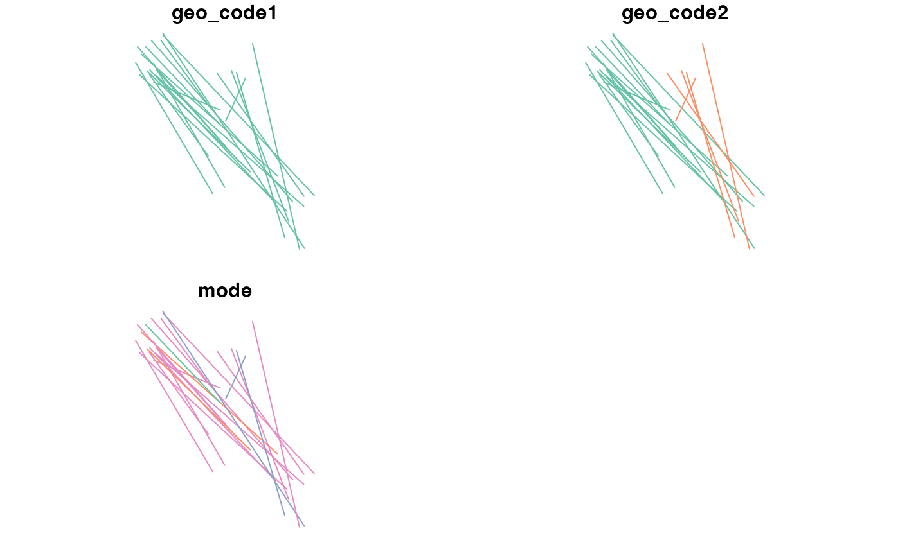
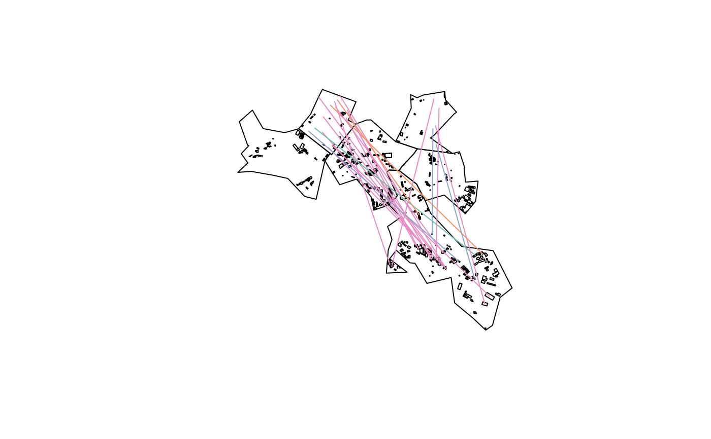

R/ab_scenario.R
ab_scenario.RdThis function takes a data frame representing origin-destination trip data in 'long' form, zones and, optionally, buildings from where trips can start and end as inputs.
ab_scenario( od, zones, zones_d = NULL, origin_buildings = NULL, destination_buildings = NULL, pop_var = 3, time_fun = ab_time_normal, output = "sf", modes = c("Walk", "Bike", "Transit", "Drive"), ... )
| od | Origin destination data with the first 2 columns containing zone code of origin and zone code of destination. Subsequent columns should be mode names such as All and Walk, Bike, Transit, Drive, representing the number of trips made by each mode of transport for use in A/B Street. |
|---|---|
| zones | Zones with IDs that match the desire lines. Class: |
| zones_d | Optional destination zones with IDs
that match the second column of the |
| origin_buildings | Polygons where trips will originate ( |
| destination_buildings | Polygons where trips can end, represented as |
| pop_var | The variable containing the total population of each desire line. |
| time_fun | The function used to calculate departure times.
|
| output | Which output format?
|
| modes | Character string containing the names of the modes of travel to
include in the outputs. These must match column names in the |
| ... | Additional arguments to pass to |
It returns an sf object by default representing individual trips
between randomly selected points (or buildings when available)
between the zones represented in the OD data.
#>#>#>#> #> Bike Drive Transit Walk #> 1 2 3 15#> All Walk Bike Drive Transit #> 21 15 1 2 3ablines = ab_scenario(od, zones = zones, origin_buildings = leeds_buildings)#> Warning: st_centroid assumes attributes are constant over geometries of x#>#>#>ablines_json = ab_json(ablines, scenario_name = "test") # ablines = ab_scenario( # leeds_houses, # leeds_buildings, # leeds_desire_lines, # leeds_zones, # output = "sf" # ) # plot(ablines, key.pos = 1, reset = FALSE) # plot(leeds_site_area$geometry, add = TRUE) # plot(leeds_buildings$geometry, add = TRUE) # plot(dutch, key.pos = 1, reset = FALSE)